Brand designer
Central Java, ID.
I care about the parts nobody puts in the brief: the clear space, the favicon, the 404.

I care about the parts nobody puts in the brief: the clear space, the favicon, the 404.